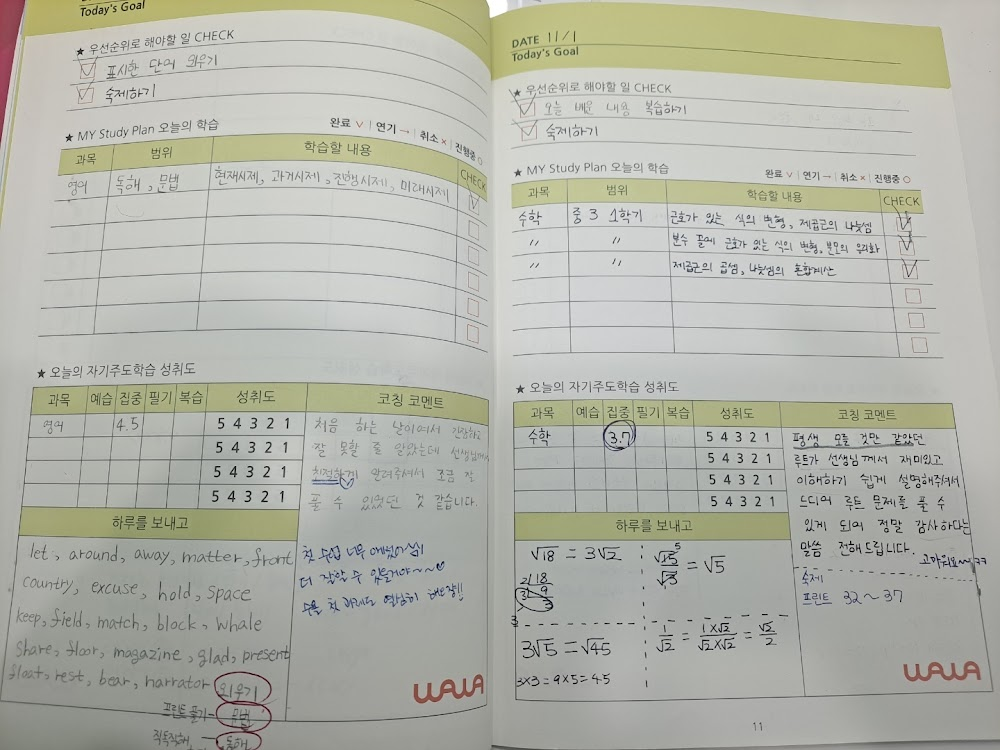
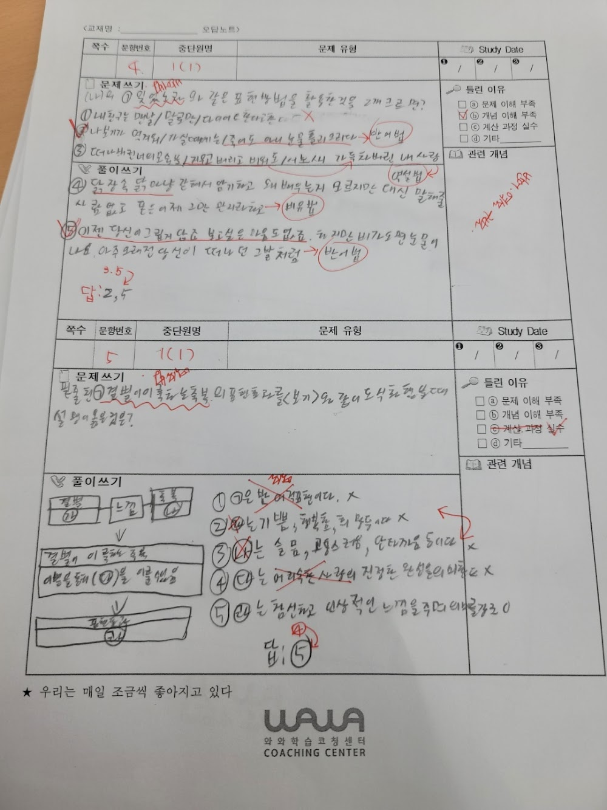
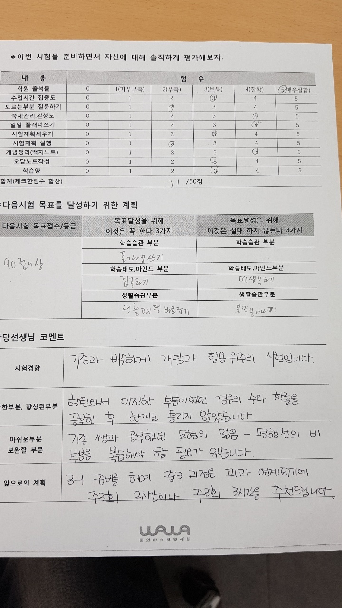

안녕하세요, 영등포구 당산동 와와학습코칭 당산점입니다. "오답노트를 쓰긴 쓰는데 성적이 안 올라요." 상담에서 자주 듣는 말입니다. 오늘은 당산점이 오답노트를 어떻게 쓰게 하는지 전해드립니다.
베껴 쓰는 오답노트는 시간 낭비입니다
틀린 문제와 정답을 예쁘게 옮겨 적는 것은 오답노트가 아닙니다. 그건 손만 바쁘고 머리는 쉬는 '베끼기'일 뿐입니다. 당산점의 오답노트는 딱 세 가지만 적습니다.
- 왜 틀렸는가 (개념 부족? 실수? 시간 부족?)
- 맞으려면 무엇이 필요했는가
- 비슷한 문제를 스스로 하나 더 풀기

'왜'를 쓰면 공부가 됩니다
틀린 이유를 스스로 쓰게 하면, 아이는 자기 약점을 정확히 마주하게 됩니다. "나는 부호에서 자꾸 실수한다", "나는 조건을 빼먹는다" — 이렇게 자기 언어로 정리한 학생은 같은 실수를 반복하지 않습니다.
이번 주에도 한 학생이 오답노트를 넘기며 "저는 항상 마지막 계산에서 틀리네요"라고 스스로 발견했습니다. 그 한마디가 어떤 강의보다 값집니다.

일주일에 한 번, 오답을 다시 풉니다
오답노트는 쓰고 덮으면 끝이 아닙니다. 당산점은 매주 한 번, 그 주에 틀린 문제를 다시 풀어봅니다. 이때 또 틀리면 아직 내 것이 안 된 것이고, 맞으면 진짜 실력이 된 것입니다. 이 반복이 쌓이면 시험에서 아는 문제를 놓치는 일이 줄어듭니다. 당산동 학부모님들, 오답노트 한 권이 아이를 바꿉니다.
.와와학습코칭 당산점 학년별 공부 방법
당산동 와와학습코칭(와와학습코칭 당산점)은 초등학생·중학생·고등학생 각 학년에 맞는 공부 방법으로 지도합니다. 조용한 자습실·공부방에서 스스로 공부하고, 영어학원·수학학원·과학학원·국어학원처럼 과목별 코칭까지 한곳에서 받을 수 있습니다.
- 초등학생 (초1·초2·초3·초4·초5·초6) — 매일 정해진 분량을 스스로 해내는 공부 습관과 기초 개념 잡기. 당산동 초등 영어학원·수학학원·공부방을 찾으신다면.
- 중학생 (중1·중2·중3) — 자유학년제·내신 대비, 오답 정리와 서술형 훈련. 당산동 중등 영어학원·수학학원·과학학원·국어학원.
- 고등학생 (고1·고2) — 내신과 수능을 함께 잡는 자기주도학습 플래닝과 취약 과목 집중. 당산동 고등 영수학원·종합학원·자기주도학습.
와와학습코칭 당산점 위치와 주변
- 🚇 교통 — 2·9호선 당산역에서 도보 약 5분
- 🏢 인근 아파트 — 당산삼성래미안4차, 당산센트럴아이파크, 효성1차·2차, 유원제일2차, 성원상떼빌 등 단지에서 도보로 오실 수 있습니다.
와와학습코칭 당산점 인근 학교
당산동 와와학습코칭(와와학습코칭 당산점)은 인근 학교 학생들의 내신·수능을 함께 준비합니다. 아래 학교에 다니는 학생이라면 영어학원·수학학원·과학학원·국어학원을 따로 찾을 필요 없이, 가까운 우리 센터에서 과목별 1:1 자기주도학습 코칭을 받을 수 있습니다.
- 인근 초등학교 — 당서초등학교, 영동초등학교, 당중초등학교 영어학원·수학학원·과학학원·국어학원
- 인근 중학교 — 당산중학교, 당산서중학교, 선유중학교 영어학원·수학학원·과학학원·국어학원
- 인근 고등학교 — 선유고등학교, 여의도고등학교, 여의도여고등학교, 영등포여고등학교, 관악고등학교 영어학원·수학학원·과학학원·국어학원
📍 와와학습코칭 당산점 센터 정보 자세히 보기 — 주소·전화·인근 학교 안내를 확인하실 수 있습니다.